VGG: Small Kernels, Depth and a Sliding Classifier
Abstract
Image recognition needs large spatial context without making every convolution kernel large. VGG stacks small filters to increase receptive fields and nonlinear depth. We check all three A/D/E depth schedules, show exactly how dense classifier weights become sliding convolutions, and expose compact tensor Adam fits on original CIFAR-10 inputs.
Source example: examples/cpp/source/nn/1_convolutional_neural_networks/1.2_classic_architectures/vgg.cpp.
The method
Configurations A/D/E have convolution counts (1,1,2,2,2), (2,2,3,3,3), and (2,2,4,4,4). Five 2×2 stride-two pools follow blocks with widths 64/128/256/512/512; three dense layers complete depths 11/16/19. There is no BN or LRN. ReLU follows every hidden layer and dropout applies to the two hidden dense outputs. Two 3×3 convolutions have a 5×5 receptive box:
At equal widths, three 3×3 kernels span a 7×7 field and use 27C² weights; a single 7×7 filter uses 49C². Extra ReLUs also change the function class. The five stride-two pooling stages leave a 7×7 map for a 224-pixel input. FC6 can be reshaped into a 7×7 VALID kernel, with FC7/8 becoming 1×1 kernels. The dense and convolutional heads agree when applied to the same feature window. The report checks that identity at canonical widths and in a larger feature map, along with all stage counts and gradients.
All three CIFAR-10 models keep the VGG depths and use 32-pixel inputs, quarter-width convolutions and 256-unit dense layers. Each fits the same 12,000 rows for ten epochs with independent padded crops and flips, dropout, and Adam with learning rate .0005. Validation NLL on 5,000 original images selects the checkpoint for evaluation on all 10,000 official test images. VGG-11 and VGG-16 use initialization seed 17. For VGG-19, seed 17 gave validation NLL 1.707930 and 31.36% test accuracy. The reported seed 29 reaches validation NLL 1.626591 and passes the 35% test sanity check.
The concept diagram below is drawn by dm::graphics::Diagram. Its editable C++
source is the complete block below; regeneration uses the same datamunge toolchain
as the numerical examples. Exports consume the saved local SVG.
#include <dm/dm.hpp>
int main() {
std::filesystem::create_directories("build");
dm::graphics::Diagram diagram;
diagram.node("n0", {0.0, 0}, "Stack small filters\nfive pooling stages");
diagram.node("n1", {5.2, 0}, "Dense classifier weights\nreshape as spatial kernels");
diagram.node("n2", {10.4, 0}, "Compact A, D, E models\nexplicit tensor Adam");
diagram.edge("n0", "n1").edge("n1", "n2");
diagram.save_svg("build/vgg_concept.svg");
}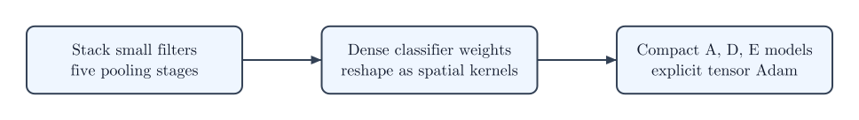
Simple examples
Convolution counts plus three classifier layers give the named depths. Canonical parameter counts below are independently calculated from layer shapes; compact models are actually instantiated.
Executed architecture diagram
The diagram below is generated by this model's forward function through
nn::Module::plot. Each style runs a zero-valued shape probe in inference mode;
it does not fit parameters or load a trained checkpoint. Shapes include the
example batch, and learned-value counts deduplicate shared tensors. The flow and LeNet views use named composite blocks; the graph view shows
functional layers and their actual branches. ModelPlotDetail::Operations
expands both into tensor primitives.
All views run left to right with node labels rotated 90 degrees counterclockwise.
Colors identify layer categories and are explained by the legend. The settings below
control fill/edge opacity, category colors, column/lane spacing, label content, font
size and wrapping. All views label names and exact shapes; aggregate learned-value counts remain in the heading. All three views use shared linear shape scales: face axes
follow spatial dimensions, depth follows channel count, and vector height follows
feature count. Batch size is excluded from geometry. A one-pixel visibility floor
keeps very small dimensions visible; it is disclosed in each figure. The scales can
instead use SquareRoot or Logarithmic compression explicitly. LeNet sheet counts
and graph neuron markers are bounded samples; their envelopes follow the shape scales.
Graph neuron bundles are drawn only for actual dense connections. Dots mark omitted
units. Wide diagrams can be scrolled at native size on the website.
Arrows follow the executed differentiable path; constants and deliberately
detached paths are not expanded. The visual conventions are inspired by
[VisualTorch's examples](https://visualtorch.readthedocs.io/en/latest/usage_examples/index.html).
#include <dm/dm.hpp>
int main() {
namespace n = dm::nn;
n::set_num_threads(2);
std::filesystem::create_directories("build");
for (int depth : {19, 16, 11}) {
n::ParameterStore p(17);
n::models::VggConfig cfg;
cfg.depth = depth;
cfg.image_size = 32;
cfg.classes = 10;
cfg.width_divisor = 4;
cfg.dense_width = 256;
n::Module model(
[&](const n::Tensor& image) {
const auto out = n::models::Vgg(p, image, cfg, false);
auto previous = image;
for (int block = 0; block < 5; ++block) {
const auto& pooled = out.pooling[block];
n::model_stage(
"Block " + std::to_string(block + 1) + " / " +
std::to_string(n::models::VggBlockDepths(depth)[block]) +
" convolutions + max pool",
previous,
pooled);
previous = pooled;
}
return out.logits;
},
"VGG-" + std::to_string(depth) + " / report configuration");
for (const auto style :
{n::ModelPlotStyle::Graph, n::ModelPlotStyle::LeNet, n::ModelPlotStyle::Flow}) {
n::ModelPlotOptions options;
options.style = style;
options.opacity = .8;
options.edge_opacity = .55;
options.funnel_opacity = .08;
options.colors.convolution = "#64B5CD";
options.colors.pooling = "#5ABF9A";
options.colors.dense = "#748BCB";
options.spacing.layer = 24;
options.spacing.lane = 12;
options.labels.type = n::ModelPlotLabel::NameAndShape;
options.labels.size = 13;
options.labels.wrap = 28;
options.sizing.spatial_scale = n::ModelPlotScale::Linear;
options.sizing.channel_scale = n::ModelPlotScale::Linear;
options.sizing.spatial_size = 96;
options.sizing.channel_size = 42;
options.sizing.minimum_extent = 1;
options.sizing.max_planes = 6;
options.detail = style == n::ModelPlotStyle::Graph ? n::ModelPlotDetail::Layers
: n::ModelPlotDetail::Blocks;
const auto diagram = model.plot(n::zeros({1, 32, 32, 3}), options);
if (diagram.parameter_count() != p.count())
return 1;
std::string output = "build/vgg_architecture_" + std::to_string(depth) + ".svg";
if (style != n::ModelPlotStyle::Flow)
output.insert(output.size() - 4, style == n::ModelPlotStyle::Graph ? "_graph" : "_lenet");
diagram.save_svg(output);
const auto label = style == n::ModelPlotStyle::Graph ? "Graph / layers"
: style == n::ModelPlotStyle::LeNet ? "LeNet / blocks"
: "Flow / blocks";
std::print(
"{}: {} nodes, {} distinct learned values.\n",
label,
diagram.nodes().size(),
diagram.parameter_count());
}
}
}Graph / layers: 27 nodes, 1354266 distinct learned values. LeNet / blocks: 11 nodes, 1354266 distinct learned values. Flow / blocks: 11 nodes, 1354266 distinct learned values. Graph / layers: 24 nodes, 1022170 distinct learned values. LeNet / blocks: 11 nodes, 1022170 distinct learned values. Flow / blocks: 11 nodes, 1022170 distinct learned values. Graph / layers: 19 nodes, 678506 distinct learned values. LeNet / blocks: 11 nodes, 678506 distinct learned values. Flow / blocks: 11 nodes, 678506 distinct learned values.
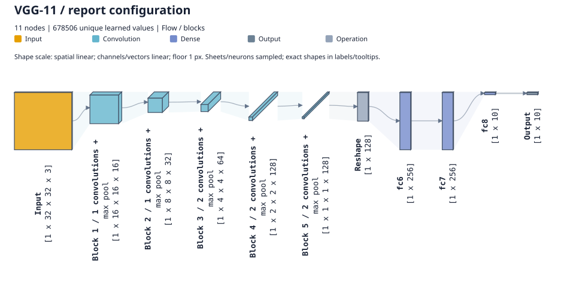
Graph and LeNet views
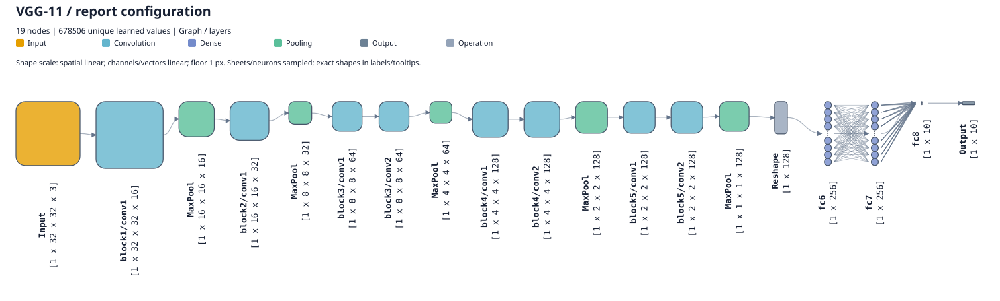
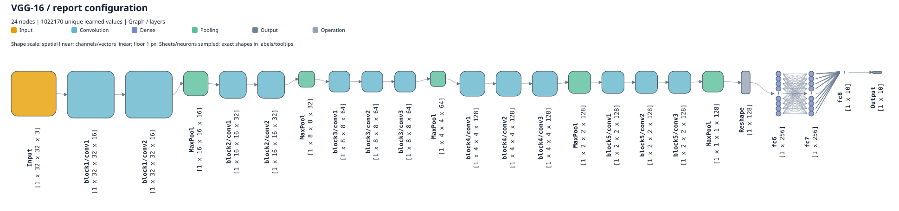
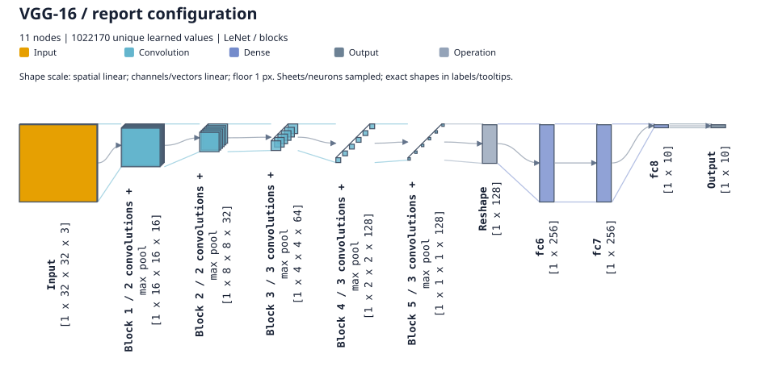
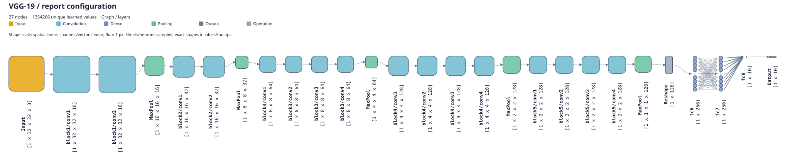
#include <dm/dm.hpp>
int main() {
namespace n = dm::nn;
n::set_num_threads(2);
n::Generator fixture(23);
std::vector<double> depth, reference, compact, receptive_field;
for (int d : {11, 16, 19}) {
const auto schedule = n::models::VggBlockDepths(d);
int64_t count = 0, in = 3;
const std::array<int, 5> widths{64, 128, 256, 512, 512};
for (int block = 0; block < 5; ++block)
for (int layer = 0; layer < schedule[block]; ++layer) {
count += 9 * in * widths[block] + widths[block];
in = widths[block];
}
count += (7 * 7 * 512LL + 1) * 4096 + (4096LL + 1) * 4096 + (4096LL + 1) * 1000;
int field = 1, jump = 1;
for (int layers : schedule) {
field += (2 * layers + 1) * jump;
jump *= 2;
}
const int expected_field = d == 11 ? 150 : d == 16 ? 212 : 268;
if (field != expected_field || jump != 32)
throw std::runtime_error("Unexpected final pooling support");
receptive_field.push_back(field);
{
n::models::VggConfig canonical;
canonical.depth = d;
n::ParameterStore full(17);
const auto pixels = n::normal({1, 224, 224, 3}, 0., .2, fixture);
const auto result = n::models::Vgg(full, pixels, canonical);
for (std::size_t block = 0; block < widths.size(); ++block) {
const int side = 224 >> (block + 1);
if (result.pooling[block].shape() != n::Shape{1, side, side, widths[block]})
throw std::runtime_error("Unexpected canonical pooling shape");
}
const auto gradients = n::grad(n::mean(n::square(result.logits)), full.parameters());
if (full.count() != count || result.convolution.size() + 3 != std::size_t(d) ||
result.logits.shape() != n::Shape{1, 1000})
throw std::runtime_error("Unexpected canonical architecture");
for (const auto &gradient : gradients) {
const double magnitude = n::max(n::abs(gradient)).item();
if (!std::isfinite(magnitude) || magnitude <= 0.)
throw std::runtime_error("Expected finite nonzero canonical gradients");
}
n::NoGradGuard guard;
const auto scores = n::models::VggConvolutionalHead(full, result.pooling.back(), canonical);
const double delta = n::max(n::abs(scores.reshape({1, 1000}) - result.logits)).item();
if (!std::isfinite(delta) || delta > 2e-5)
throw std::runtime_error("Shared dense and convolutional heads disagree");
std::println("VGG-{} verifies {} parameter tensors and shared-head max error {:.8f}.", d,
gradients.size(), delta);
}
n::models::VggConfig cfg;
cfg.depth = d;
cfg.image_size = 32;
cfg.classes = 10;
cfg.width_divisor = 4;
cfg.dense_width = 256;
n::ParameterStore p(17);
n::NoGradGuard guard;
const auto output = n::models::Vgg(p, n::zeros({1, 32, 32, 3}), cfg);
if (output.convolution.size() + 3 != size_t(d) ||
output.pooling[4].shape() != n::Shape{1, 1, 1, 128})
return 1;
depth.push_back(d);
reference.push_back(count);
compact.push_back(p.count());
}
auto plot = dm::graphics::RPlot::create();
plot.lines(depth, compact, "instantiated compact", {37, 99, 235})
.title("Preserve depth while reducing widths and head size")
.x_label("learned depth")
.y_label("compact parameters");
std::filesystem::create_directories("build");
plot.size(850, 420).save_svg("build/vgg_counts.svg");
dm::dstruct::DataFrame table;
table.add_column("depth", depth);
table.add_column("full_shape_count", reference);
table.add_column("final_pool_receptive_field", receptive_field);
table.add_column("instantiated_compact_count", compact);
std::print("{}\n", table.to_md(0));
}VGG-11 verifies 22 parameter tensors and shared-head max error 0.00000191. VGG-16 verifies 32 parameter tensors and shared-head max error 0.00000107. VGG-19 verifies 38 parameter tensors and shared-head max error 0.00000125.
| depth | full_shape_count | final_pool_receptive_field | instantiated_compact_count |
|---|---|---|---|
| 11 | 132863336 | 150 | 678506 |
| 16 | 138357544 | 212 | 1022170 |
| 19 | 143667240 | 268 | 1354266 |
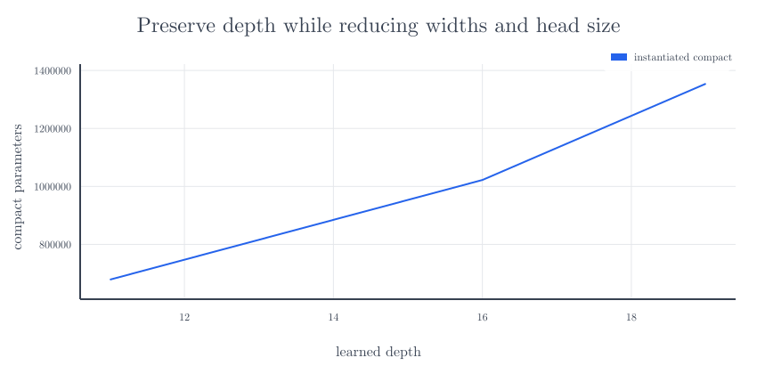
Checking the theory
A larger feature map produces six sliding classifier outputs. Every output is checked against the dense head applied to its corresponding 2×2 feature window.
#include <dm/dm.hpp>
int main() {
namespace n = dm::nn;
const auto type = n::DType::Float64;
n::models::VggConfig cfg;
cfg.depth = 11;
cfg.image_size = 64;
cfg.classes = 3;
cfg.width_divisor = 8;
cfg.dense_width = 16;
n::ParameterStore p(9, type);
n::NoGradGuard guard;
n::models::Vgg(p, n::zeros({1, 64, 64, 3}, type), cfg);
n::Generator rng(9);
const auto feature = n::normal({1, 3, 4, 64}, 0, .2, rng, type);
const auto convolution = n::models::VggConvolutionalHead(p, feature, cfg);
std::vector<n::Tensor> windows;
for (int row = 0; row < 2; ++row)
for (int column = 0; column < 3; ++column) {
auto h = n::slice(feature, {0, row, column, 0}, {1, 2, 2, 64}).reshape({1, 256});
h = n::dense(p, "fc6", h, 16, n::Activation::Relu);
h = n::dense(p, "fc7", h, 16, n::Activation::Relu);
windows.push_back(n::dense(p, "fc8", h, 3));
}
const double error =
n::max(n::abs(convolution.reshape({6, 3}) - n::concat(windows, 0))).item();
if (error > 1e-12)
return 1;
std::print("Six sliding feature windows; maximum dense/convolutional score error {:.12f}.\n",
error);
}Six sliding feature windows; maximum dense/convolutional score error 0.000000000000.
A dataset example
All three compact models share fitting and validation splits and are evaluated on the complete official test split.
#include <dm/dm.hpp>
int main() {
namespace n = dm::nn;
std::filesystem::path cache;
if (const auto *p = std::getenv("DATAMUNGE_DATA_DIR"))
cache = p;
else if (const auto *p = std::getenv("XDG_CACHE_HOME"))
cache = std::filesystem::path(p) / "datamunge/datasets";
else
cache = std::filesystem::path(std::getenv("HOME")) / ".cache/datamunge/datasets";
dm::datasets::fetch("cifar10", (cache / "cifar10").string());
const auto raw =
n::data::LoadCifar({cache / "cifar10/data_batch_1.bin"}, n::data::Cifar::k10);
const auto images = n::cast(raw.images, n::DType::Float32) / 255.;
const auto labels = raw.labels;
std::vector<int64_t> rows;
for (int cls = 0; cls < 10; ++cls) {
for (int64_t row = 0; row < labels.numel(); ++row)
if (labels.at({row}) == cls) {
rows.push_back(row);
break;
}
}
if (rows.size() != 10)
return 1;
std::filesystem::create_directories("build");
n::plot_tensor_images(n::take_rows(images, rows), 5)
.title("CIFAR-10: one RGB image per class")
.size(1000, 530)
.save_svg("build/vgg_inputs.svg");
std::print("One original cached training image per class, IDs 0..4 then 5..9.\n");
}One original cached training image per class, IDs 0..4 then 5..9.

#include <dm/dm.hpp>
int main() {
int rendered_confusions = 0;
namespace n = dm::nn;
n::set_num_threads(2);
std::filesystem::path cache;
if (const auto *p = std::getenv("DATAMUNGE_DATA_DIR"))
cache = p;
else if (const auto *p = std::getenv("XDG_CACHE_HOME"))
cache = std::filesystem::path(p) / "datamunge/datasets";
else
cache = std::filesystem::path(std::getenv("HOME")) / ".cache/datamunge/datasets";
dm::datasets::fetch("cifar10", (cache / "cifar10").string());
const auto development = n::load_cifar10((cache / "cifar10").string(), "train");
if (development.images.shape() != n::Shape{50000, 32, 32, 3})
throw std::runtime_error("Expected all CIFAR-10 development rows");
std::vector<std::int64_t> order(50000);
std::iota(order.begin(), order.end(), 0);
std::mt19937_64 split(2026);
std::shuffle(order.begin(), order.end(), split);
const std::vector<std::int64_t> fitting(order.begin(), order.begin() + 12000);
const std::vector<std::int64_t> held_out(order.begin() + 45000, order.end());
const auto tx = n::take_rows(development.images, fitting);
const auto ty = n::take_rows(development.labels, fitting);
const auto vx = n::take_rows(development.images, held_out);
const auto vy = n::take_rows(development.labels, held_out);
std::filesystem::create_directories("build");
auto learning = dm::graphics::RPlot::create();
std::vector<double> variants, seeds, counts, accuracy, nll, training_nll;
for (int variant : {11, 16, 19}) {
n::ParameterStore p(variant == 19 ? 29 : 17);
n::models::VggConfig cfg;
cfg.depth = variant;
cfg.image_size = 32;
cfg.classes = 10;
cfg.width_divisor = 4;
cfg.dense_width = 256;
cfg.keep_probability = .5;
auto output = [&](const n::Tensor &x, bool training) {
return n::models::Vgg(p, x, cfg, training);
};
const auto predict = [&](const n::Tensor &images) {
n::NoGradGuard guard;
std::vector<n::Tensor> result;
for (std::int64_t at = 0; at < images.size(0); at += 128) {
const auto rows = n::slice_axis(images, 0, at, std::min(at + 128, images.size(0)));
result.push_back(output(2 * rows - 1, false).logits);
}
return n::concat(result, 0);
};
{
n::NoGradGuard guard;
output(n::zeros({1, 32, 32, 3}), false);
}
n::OptimizerConfig options;
options.kind = n::OptimizerKind::Adam;
n::Optimizer optimizer(p, .0005, options);
n::BatchOrder batches(12000, 128, 29);
n::Generator augmentation(151);
const std::string path = "build/vgg_" + std::to_string(variant) + "_best.npz";
double best = std::numeric_limits<double>::infinity();
std::vector<double> epochs, validation;
for (int epoch = 0; epoch < 10; ++epoch) {
batches.begin_epoch();
std::size_t used = 0;
for (auto rows = batches.next(); !rows.empty(); rows = batches.next()) {
used += rows.size();
const auto augmented = n::study::augment_cifar10(n::take_rows(tx, rows), augmentation);
const auto logits = output(2 * augmented - 1, true).logits;
auto loss = n::sparse_softmax_cross_entropy(logits, n::take_rows(ty, rows));
for (const auto &w : p.parameters())
if (w.dim() >= 2)
loss = loss + .00005 * n::sum(n::square(w));
optimizer.minimize(loss);
}
if (used != fitting.size())
throw std::runtime_error("Incomplete fitting epoch");
const double val = n::sparse_softmax_cross_entropy(predict(vx), vy).item();
if (!std::isfinite(val))
return 1;
epochs.push_back(epoch + 1);
validation.push_back(val);
if (val < best) {
best = val;
p.save(path);
}
}
p.load(path);
n::NoGradGuard guard;
const double restored = n::sparse_softmax_cross_entropy(predict(vx), vy).item();
if (!std::isfinite(restored) || std::abs(restored - best) > 1e-6)
throw std::runtime_error("Restored validation NLL differs");
const auto official = n::load_cifar10((cache / "cifar10").string(), "test");
if (official.images.shape() != n::Shape{10000, 32, 32, 3})
throw std::runtime_error("Expected all official CIFAR-10 test rows");
const auto predicted = predict(official.images), qy = official.labels;
n::ConfusionMatrix native_confusion(10);
native_confusion.add(qy, n::argmax(predicted, 1));
n::save_npz("build/vgg_heldout_" + std::to_string(rendered_confusions) + ".npz",
{{"truth", qy}, {"logits", predicted}, {"counts", native_confusion.to_tensor()}});
native_confusion.save_svg("build/vgg_confusion_api_" + std::to_string(rendered_confusions++) +
".svg",
{.title = "vgg / selected-checkpoint test counts"});
variants.push_back(variant);
seeds.push_back(variant == 19 ? 29 : 17);
counts.push_back(p.count());
const double score = n::accuracy(predicted, qy);
if (score < .35)
throw std::runtime_error("Test accuracy below source sanity threshold");
accuracy.push_back(score);
training_nll.push_back(n::sparse_softmax_cross_entropy(predict(tx), ty).item());
nll.push_back(n::sparse_softmax_cross_entropy(predicted, qy).item());
learning.lines(epochs, validation, "VGG-" + std::to_string(variant),
variant == 11 ? dm::graphics::RGB{37, 99, 235}
: variant == 16 ? dm::graphics::RGB{234, 88, 12}
: dm::graphics::RGB{22, 163, 74});
}
learning.title("Validation NLL from explicit compact-model Adam loops")
.x_label("epoch")
.y_label("mean NLL");
learning.size(850, 420).save_svg("build/vgg_training.svg");
dm::dstruct::DataFrame table;
table.add_column("variant", variants);
table.add_column("initialization_seed", seeds);
table.add_column("parameters", counts);
table.add_column("test_accuracy", accuracy);
table.add_column("test_NLL", nll);
table.add_column("selected_training_NLL", training_nll);
std::print(
"12000 fitted rows, 5000 validation rows, 10000 official-test rows per depth; ten epochs.\n\n{}\n",
table.to_md(6));
}12000 fitted rows, 5000 validation rows, 10000 official-test rows per depth; ten epochs.
| variant | initialization_seed | parameters | test_accuracy | test_NLL | selected_training_NLL |
|---|---|---|---|---|---|
| 11 | 17 | 678506 | 0.5273 | 1.319226 | 1.282295 |
| 16 | 17 | 1022170 | 0.4513 | 1.430501 | 1.386833 |
| 19 | 29 | 1354266 | 0.3543 | 1.600033 | 1.580268 |
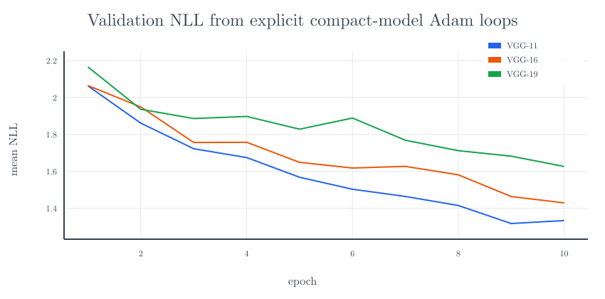
The table compares unaugmented inference NLL and test accuracy at each selected checkpoint.
Native confusion matrices
These matrices use the held-out predictions from the executed program above.
The native ConfusionMatrix SVG API labels exact counts with true classes
running from top to bottom and predicted classes from left to right.
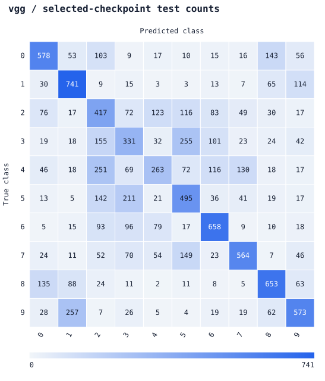
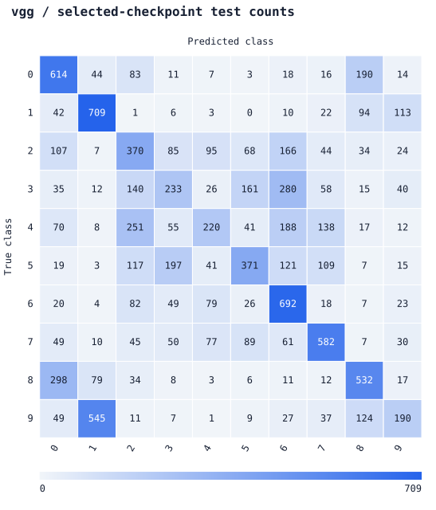
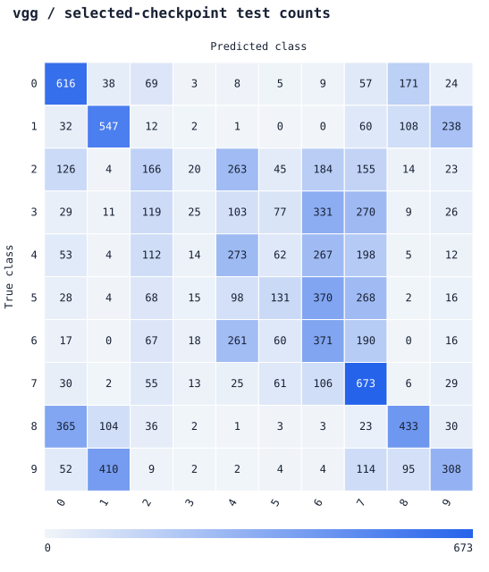
Regenerate every adjacent view
Each alternate architecture or held-out confusion below is copied from this run's local build directory.
#include <filesystem>
int main() {
std::filesystem::create_directories("build");
std::filesystem::copy_file("build/vgg_architecture_11_graph.svg", "build/export_vgg_architecture_11_graph.svg",
std::filesystem::copy_options::overwrite_existing);
}#include <filesystem>
int main() {
std::filesystem::create_directories("build");
std::filesystem::copy_file("build/vgg_architecture_11_lenet.svg", "build/export_vgg_architecture_11_lenet.svg",
std::filesystem::copy_options::overwrite_existing);
}#include <filesystem>
int main() {
std::filesystem::create_directories("build");
std::filesystem::copy_file("build/vgg_architecture_16.svg", "build/export_vgg_architecture_16.svg",
std::filesystem::copy_options::overwrite_existing);
}#include <filesystem>
int main() {
std::filesystem::create_directories("build");
std::filesystem::copy_file("build/vgg_architecture_16_graph.svg", "build/export_vgg_architecture_16_graph.svg",
std::filesystem::copy_options::overwrite_existing);
}#include <filesystem>
int main() {
std::filesystem::create_directories("build");
std::filesystem::copy_file("build/vgg_architecture_16_lenet.svg", "build/export_vgg_architecture_16_lenet.svg",
std::filesystem::copy_options::overwrite_existing);
}#include <filesystem>
int main() {
std::filesystem::create_directories("build");
std::filesystem::copy_file("build/vgg_architecture_19.svg", "build/export_vgg_architecture_19.svg",
std::filesystem::copy_options::overwrite_existing);
}#include <filesystem>
int main() {
std::filesystem::create_directories("build");
std::filesystem::copy_file("build/vgg_architecture_19_graph.svg", "build/export_vgg_architecture_19_graph.svg",
std::filesystem::copy_options::overwrite_existing);
}#include <filesystem>
int main() {
std::filesystem::create_directories("build");
std::filesystem::copy_file("build/vgg_architecture_19_lenet.svg", "build/export_vgg_architecture_19_lenet.svg",
std::filesystem::copy_options::overwrite_existing);
}#include <filesystem>
int main() {
std::filesystem::create_directories("build");
std::filesystem::copy_file("build/vgg_confusion_api_0.svg", "build/export_vgg_confusion_api_0.svg",
std::filesystem::copy_options::overwrite_existing);
}#include <filesystem>
int main() {
std::filesystem::create_directories("build");
std::filesystem::copy_file("build/vgg_confusion_api_1.svg", "build/export_vgg_confusion_api_1.svg",
std::filesystem::copy_options::overwrite_existing);
}#include <filesystem>
int main() {
std::filesystem::create_directories("build");
std::filesystem::copy_file("build/vgg_confusion_api_2.svg", "build/export_vgg_confusion_api_2.svg",
std::filesystem::copy_options::overwrite_existing);
}Conclusion
All A/D/E schedules retain their named depths and five pooling stages. Dense and sliding convolutional heads agree on matching feature windows. The compact CIFAR-10 runs report held-out predictions for the three validation-selected checkpoints.
References
- [Simonyan and Zisserman (2015), Very Deep Convolutional Networks for Large-Scale Image Recognition](https://arxiv.org/abs/1409.1556).
- [CIFAR-10 binary dataset](https://www.cs.toronto.edu/~kriz/cifar.html).